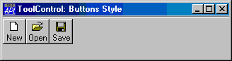
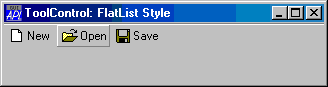
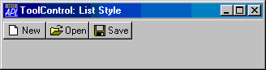
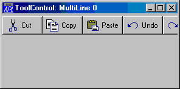
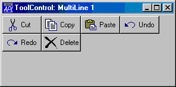
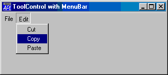

| Parents | Children | Properties | Methods | Events |
| Purpose: | The ToolControl object provides a standard Windows ToolBar. |
Description
The ToolControl object provides an interface to the native Windows ToolBar control and supersedes the Dyalog APL ToolBar object.
The tools on a ToolControl are normally represented by ToolButton objects, but the ToolControl may also act as a parent for other objects, including a MenuBar (see below).
Unlike the ToolBar, the ToolControl fully determines the positioning of its children automatically and this is governed by their order of creation. The Posn property of any child of a ToolControl is therefore read-only. Furthermore, the height of objects in a ToolControl may be no greater than that of a ToolButton in the same ToolControl. This in turn is governed by the sizes of the FontObj and ImageList in use in that ToolControl. ToolControl objects should be used in preference to ToolBar objects.
If a ToolControl is the child of a Form, its position and orientation is defined by its Align property. This property is ignored if the ToolControl is the child of a CoolBand.
The overall appearance of the ToolButton objects displayed by the ToolControl is defined by the Style property of the ToolControl itself, rather than by individual ToolButtons. This may be 'Buttons', 'FlatButtons', 'List' or 'FlatList'.
'F'⎕WC'Form' 'ToolControl: FlatButtons Style (default)'('Size' 10 40)
'F.TB'⎕WC'ToolControl'
'F.TB.IL'⎕WC'ImageList'('Masked' 0)
'F.TB.IL.'⎕WC'Bitmap'('Comctl32' 120)
'F.TB'⎕WS'ImageListObj' 'F.TB.IL'
'F.TB.B1'⎕WC'ToolButton' 'New'('ImageIndex' 7)
'F.TB.B2'⎕WC'ToolButton' 'Open'('ImageIndex' 8)
'F.TB.B3'⎕WC'ToolButton' 'Save'('ImageIndex' 9)

'F.TB'⎕WC'ToolControl'('Style' 'Buttons')
'F.TB'⎕WC'ToolControl'('Style' 'FlatList')
'F.TB'⎕WC'ToolControl'('Style' 'List')The presence or absence of a recessed line drawn above, below, to the left of, or to the right of the ToolControl is controlled by the Divider property whose default is 1 (show divider).
The MultiLine property specifies whether or not ToolButtons (and other controls) are arranged in several rows (or columns) when there are more than will otherwise fit. If MultiLine is 0 (the default), the ToolControl object clips its childen and the user must resize it to bring more objects into view.
'F'⎕WC'Form' 'ToolControl: MultiLine 0'('Size' 20 36)
'F.TB'⎕WC'ToolControl'('Style' 'List')
'F.TB.IL'⎕WC'ImageList'('Masked' 0)('Size' 24 24)
'F.TB.IL.'⎕WC'Bitmap'('ComCtl32' 121)⍝ STD_LARGE
'F.TB'⎕WS'ImageListObj' 'F.TB.IL'
'F.TB.B1'⎕WC'ToolButton' 'Cut'('ImageIndex' 1)
'F.TB.B2'⎕WC'ToolButton' 'Copy'('ImageIndex' 2)
'F.TB.B3'⎕WC'ToolButton' 'Paste'('ImageIndex' 3)
'F.TB.B4'⎕WC'ToolButton' 'Undo'('ImageIndex' 4)
'F.TB.B5'⎕WC'ToolButton' 'Redo'('ImageIndex' 5)
'F.TB.B6'⎕WC'ToolButton' 'Delete'('ImageIndex' 6)

'F.TB'⎕WC'ToolControl'('MultiLine' 1)('Style' 'List')The Transparent property specifies whether or not the ToolControl is transparent. If so, the visual effect is as if the ToolButtons (and other controls) were drawn directly on the parent Form as illustratedbelow .
'F'⎕WC'Form' 'ToolControl: Transparent 1)'('Size' 10 40)
'F.BM'⎕WC'Bitmap' 'C:\WINDOWS\WINLOGO'
'F'⎕WS'Picture' 'F.BM' 1
'F.TB'⎕WC'ToolControl'('Transparent' 1)('Style' 'FlatList')
'F.TB.IL'⎕WC'ImageList'('Masked' 0)('Size' 24 24)
'F.TB.IL.'⎕WC'Bitmap'('ComCtl32' 121)⍝ STD_LARGE
'F.TB'⎕WS'ImageListObj' 'F.TB.IL'
'F.TB.B1'⎕WC'ToolButton' 'New'('ImageIndex' 7)
'F.TB.B2'⎕WC'ToolButton' 'Open'('ImageIndex' 8)
'F.TB.B3'⎕WC'ToolButton' 'Save'('ImageIndex' 9)
The ShowCaptions property specifies whether or not the captions of ToolButton objects are drawn. Its default value is 1 (draw captions). ToolButtons drawn without captions occupy much less space and ShowCaptions provides a quick way to turn captions on/off for user customisation.
The ShowDropDown property specifies whether or not a drop-down menu symbol is drawn alongside ToolButtons which have Style'DropDown'. ShowDropDown also affects the behaviour of such ToolButton objects when clicked.
The ButtonsAcceptFocus property determines how the ToolControl responds to rthe Tab and cursor movement keys.
As a special case, the ToolControl may contain a MenuBar as its only child. In this case, Dyalog APL causes the menu items to be drawn as buttons as shown below.
Although nothing is done to prevent it, the use of other objects in a ToolControl containing a MenuBar, is not supported.
'F'⎕WC'Form' 'ToolControl with MenuBar'('Size' 20 40)
'F.TB'⎕WC'ToolControl'
:With 'F.TB.MB'⎕WC'MenuBar'
:With 'File'⎕WC'Menu' 'File'
'New'⎕WC'MenuItem' 'New'
'Open'⎕WC'MenuItem' 'Open'
'Close'⎕WC'MenuItem' 'Close'
:EndWith
:With 'Edit'⎕WC'Menu' 'Edit'
'Cut'⎕WC'MenuItem' 'Cut'
'Copy'⎕WC'MenuItem' 'Copy'
'Paste'⎕WC'MenuItem' 'Paste'
:EndWith
:EndWith